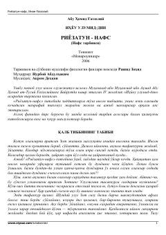

RImom Gʻazzoliyning nafs tarbiyasi va qalb kasalliklari muolajasiga bagʻishlangan asari.
Ushbu asar buyuk alloma Imom Gʻazzoliyning mashhur "Ihyou ulumid-din" kitobining uchinchi boʻlimi boʻlib, nafs tarbiyasi, insonning ichki olami, axloqiy komillik va qalb kasalliklarini muolajasiga bagʻishlangan. Kitobda inson tabiatidagi ziddiyatlar, goʻzal axloqqa erishish yoʻllari hamda qalb tibbiyotiga oid muhim masalalar yoritilgan.